7. 详细功能描述
7.1 概览
页面目标
按日期范围看活动规模、进行中数量、参与人数、浏览量；下钻进行中活动详情。
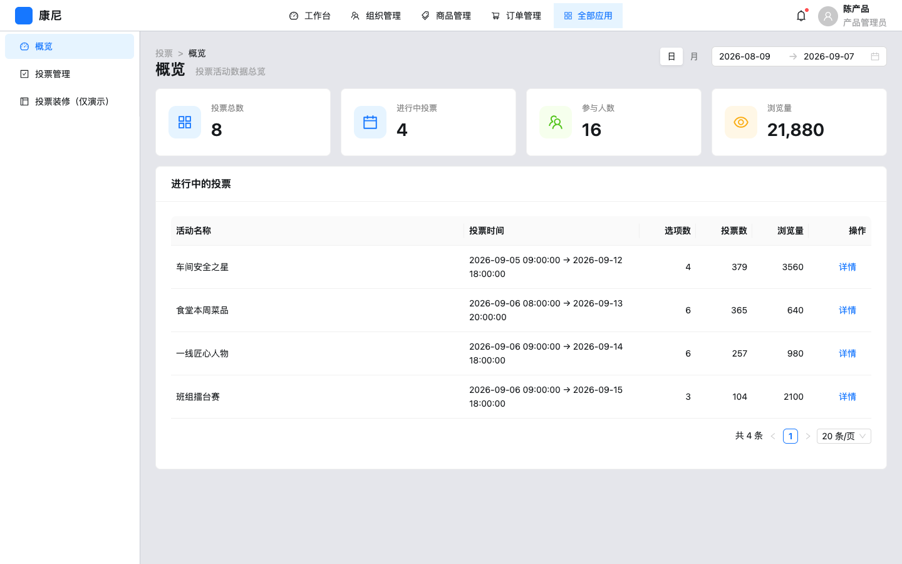
投票概览-页面-整体布局 ：对照「投票概览-页面-整体布局」实际渲染，证明该模块存在及默认样式。
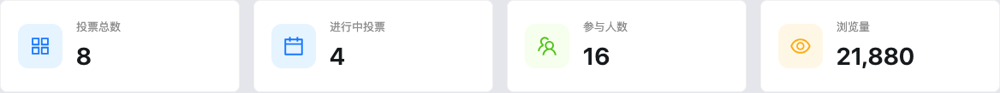
投票概览-KPI-四指标卡 ：对照「投票概览-KPI-四指标卡」实际渲染，证明该模块存在及默认样式。
字段 / 指标
字段名称 组件路径 控件类型 是否必填 默认值 校验规则 选项值 业务含义
日期范围 投票概览-页头-日期范围 OverviewDateRange 否 应用默认区间 活动投票期与区间重叠 或 createdAt 落在区间内即计入 — 过滤 scopedCampaigns 投票总数 投票概览-KPI-投票总数 指标卡可点 — 范围内活动条数 — — 点进投票管理 进行中投票 投票概览-KPI-进行中投票 指标卡可点 — 范围内 status=进行中 — — 点进投票管理（不带状态筛选） 参与人数 投票概览-KPI-参与人数 指标卡可点 — 范围内 cast 去重 userId — — 点进列表 浏览量 投票概览-KPI-浏览量 指标卡可点 — 范围内 viewCount 求和 — — 员工打开可见活动首页时 incrementVoteV2ViewCount +1
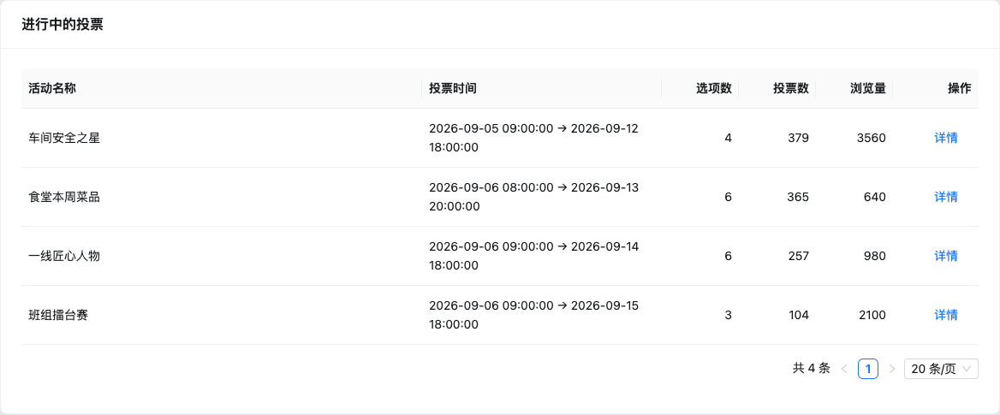
投票概览-进行中表格-活动行 ：对照「投票概览-进行中表格-活动行」实际渲染，证明该模块存在及默认样式。
列
列名 组件路径 数据含义 格式 是否可排序 是否可筛选 行操作
活动名称 投票概览-进行中表格-名称 campaign.name ellipsis 否 否 — 投票时间 投票概览-进行中表格-时间 start → end 字符串 否 否 — 选项数 投票概览-进行中表格-选项数 选手条数 数字 否 否 — 投票数 投票概览-进行中表格-投票数 选手 voteCount 求和 数字 否 否 — 浏览量 投票概览-进行中表格-浏览量 campaign.viewCount 数字 否 否 — 操作 投票概览-进行中表格-详情 — link — — 进活动详情
交互规则
空表 Empty「当前没有进行中的投票」。分页用 B2B 标准 pageSize。四张 KPI 均无筛选参数直达列表。
7.2 投票装修（仅演示）
产品说明：投票后台不单独做装修功能 。若有装修需求，通过现有微页面装修 实现。本页仅为原型样式演示，不作为生产装修入口。
页面目标
原型用于对照 C 端发现页卡片样式（页面标题、组件顺序、投票列表样式与数量上限）。移动端与 PC 两套配置，路由 vote-v2-layout / vote-v2-layout-pc。页内「移动端/PC端」切换不改 hash 。
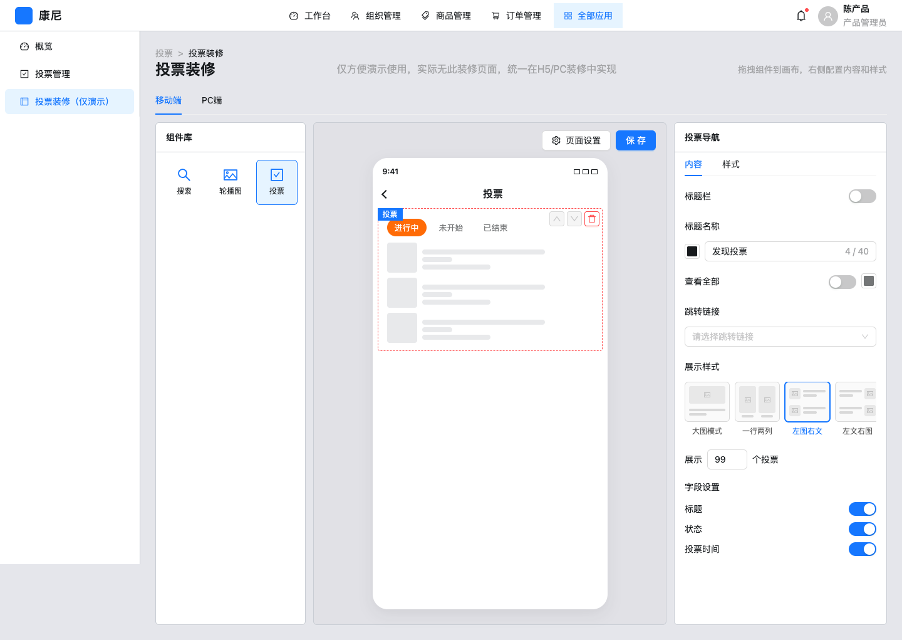
投票装修-移动端-工作台整体 ：对照「投票装修-移动端-工作台整体」实际渲染，证明该模块存在及默认样式。
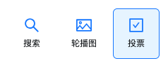
投票装修-组件面板-搜索轮播投票 ：对照「投票装修-组件面板-搜索轮播投票」实际渲染，证明该模块存在及默认样式。
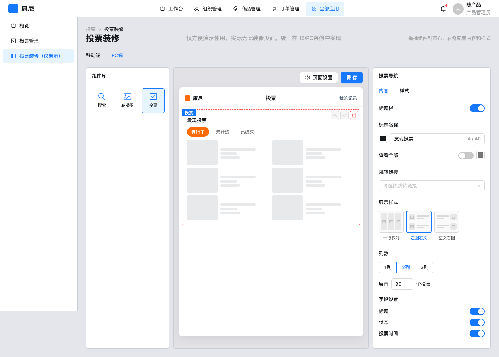
投票装修-PC-工作台整体 ：对照「投票装修-PC-工作台整体」实际渲染，证明该模块存在及默认样式。
组件
组件路径 组件类型 默认状态 显示/隐藏逻辑 启用/禁用逻辑 数据来源 状态变化 空/错/加载状态 权限/条件控制
投票装修-组件面板-搜索 palette 块 默认页不含搜索 拖入后 C 端出搜索框 — placeholder 默认「搜索投票名称」 拖拽/改配置即时 save 草稿 — 无 投票装修-组件面板-轮播图 banner 默认不含 ；拖入才有 C 端 HomeBanner 链接用 VoteBannerLinkPicker slides 即时草稿；点保存 publish — 无 投票装修-组件面板-投票 vote 列表块 默认唯一块；标题「发现投票」；样式 left-image；latestCount=20；showTitle/Status/Time 默认开 C 端卡片列表 移动端样式含 large-image / two-col / left-image / left-text / scroll；PC 仅 large-image / left-image / left-text，可配列数 活动 store + 状态 Tab 截断 latestCount；字段开关控卡片标题/状态/时间 暂无活动 仍按 canSeeVoteV2
操作
工作台仅一主按钮「保存」：调用 publishVoteV2Decoration，toast「已保存，C端首页已更新」。拖拽/改块时 saveVoteV2Decoration 写草稿到 localStorage koni-vote-v2-decoration。无独立「发布」按钮 。页面标题 max 20。投票块可开关「标题 / 状态 / 投票时间」。预览 chrome 含状态 Tab「进行中/未开始/已结束」与「我的记录」。默认页仅 vote 块（无轮播/搜索）。
根据页面推测需要 ：C 端列表 useVoteV2Decoration 读草稿 ；拖拽后未点保存也可能立刻出现在员工端（与「保存」文案不一致）。侧栏标注「仅演示」。
7.3 投票管理（后台列表）
页面目标
检索、进入配置、分享、按状态限制删除。
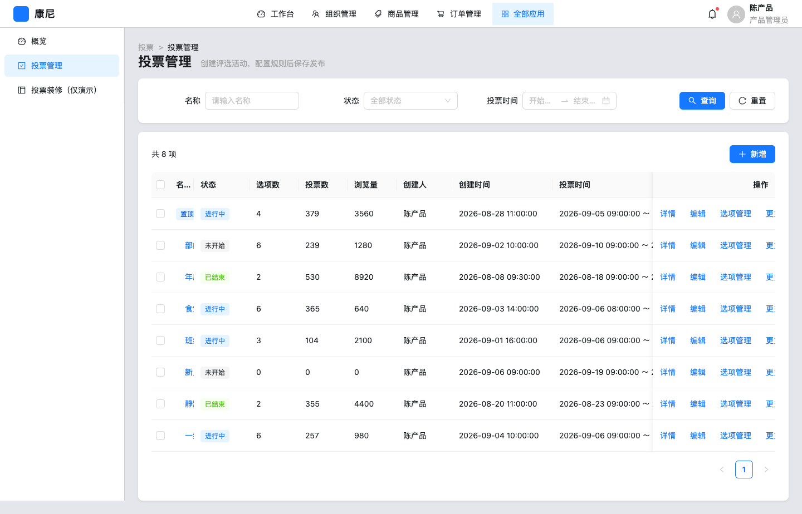
投票管理-页面-整体布局 ：对照「投票管理-页面-整体布局」实际渲染，证明该模块存在及默认样式。
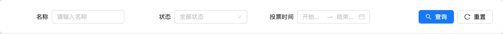
投票管理-查询筛选-活动名称/状态/投票时间 ：对照「投票管理-查询筛选-活动名称/状态/投票时间」实际渲染，证明该模块存在及默认样式。
字段说明
字段名称 组件路径 控件类型 是否必填 默认值 校验规则 选项值 业务含义
活动名称 投票管理-查询筛选-活动名称输入 Input allowClear 否 空 trim 后 includes — 草稿查询，点查询才生效 状态 投票管理-查询筛选-状态选择 Select allowClear 否 全部 — 未开始/进行中/已结束 由 startAt/endAt 与当前时间推导 投票时间 投票管理-查询筛选-时间范围 RangePicker showTime 否 空 活动区间与筛选区间重叠 — 结束早于筛选起 或 开始晚于筛选止 则排除
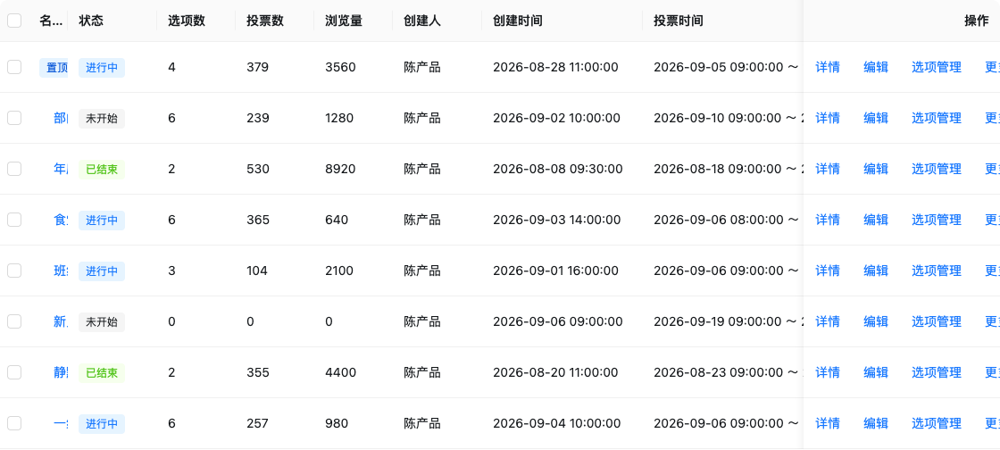
投票管理-列表表格-活动行与操作 ：对照「投票管理-列表表格-活动行与操作」实际渲染，证明该模块存在及默认样式。
列
列名 组件路径 数据含义 格式 是否可排序 是否可筛选 行操作
活动名称 投票管理-列表表格-名称链接 campaign.name ellipsis 否 查询区 进详情 状态 投票管理-列表表格-状态标签 resolveVoteV2Status Tag 否 查询区 — 选项数 投票管理-列表表格-选项数 选手条数 数字 否 否 — 投票数 投票管理-列表表格-投票数 选手 voteCount 求和 数字 否 否 — 浏览量 投票管理-列表表格-浏览量 viewCount 数字 否 否 可见首页打开 +1（内存 store） 创建时间 投票管理-列表表格-创建时间 createdAt YYYY-MM-DD HH:mm:ss 否 否 — 投票时间 投票管理-列表表格-投票时间 start ～ end 字符串 否 查询区 — 操作 投票管理-列表表格-操作列 — link — — 详情/编辑/选项管理/分享/删除
操作说明
操作名称 组件路径 触发元素 前置条件 启用/禁用逻辑 用户动作 系统响应 状态变化 成功反馈 失败反馈 跳转/接口
查询 投票管理-查询筛选-查询按钮 SearchPanel 查询 无 始终可用 点击 draft→query，清选择 表格刷新 message.success 查询完成 无匹配 Empty「没有符合条件的活动」 本地 filter 重置 投票管理-查询筛选-重置 重置 无 始终可用 点击 清空 draft+query 全量列表 无 toast — 本地 新增 投票管理-工具栏-新增 主按钮「新增」 无 始终可用 点击 — — — — #/voting-v2/vote-v2-create 分享 投票管理-列表操作-分享 分享 行存在 始终可用 点击 打开 VoteV2ShareModal 弹窗 open 复制成功「链接已复制」；二维码成功「二维码已下载」（文件 {活动名}-二维码.png） clipboard 失败「复制失败，请手动复制链接」；二维码失败「二维码下载失败，请稍后重试」 无接口；URL=origin+pathname+#/c/h5/vote-v2-id 删除 投票管理-列表操作-删除 删除 未开始 进行中/已结束 disabled 点击 confirm 确认删除活动「name」？删除后不可恢复 行消失 已删除活动 拦截时 message.info 原因 removeVoteV2 内存 批量删除 投票管理-批量操作条-批量删除 批量删除 勾选≥1 有选择才出现条 点击 只删 canDelete；skipped 写入 content 清选择 已删除 N 项（可能跳过 M） 全不可删：「所选活动均不可删除，仅未开始的活动可删」 内存
投票管理-工具栏-新增按钮 ：对照「投票管理-工具栏-新增按钮」实际渲染，证明该模块存在及默认样式。
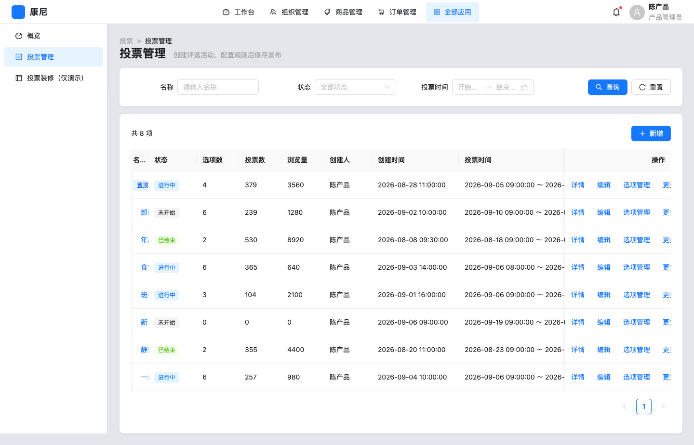
投票管理-分享弹窗-二维码与链接 ：对照「投票管理-分享弹窗-二维码与链接」实际渲染，证明该模块存在及默认样式。
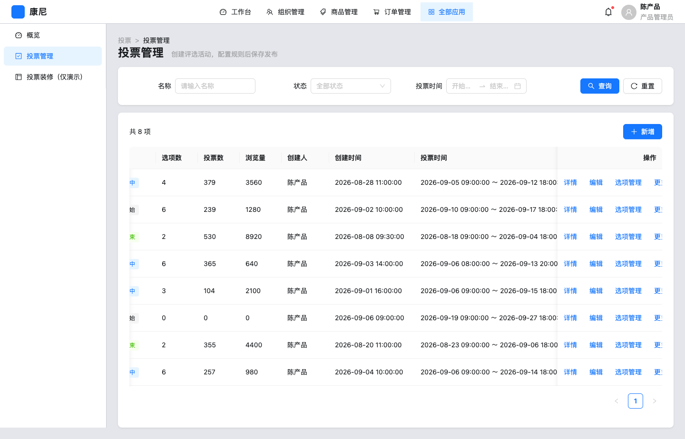
投票管理-删除确认弹窗-危险主按钮 ：对照「投票管理-删除确认弹窗-危险主按钮」实际渲染，证明该模块存在及默认样式。
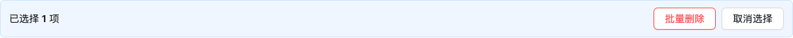
投票管理-批量操作条-已选择与批量删除 ：对照「投票管理-批量操作条-已选择与批量删除」实际渲染，证明该模块存在及默认样式。
组件显示逻辑
组件路径 组件类型 默认状态 显示/隐藏逻辑 启用/禁用逻辑 数据来源 状态变化 空/错/加载状态 权限/条件控制
投票管理-列表表格 Table 展示种子 7 条 filtered.length>0 — useVoteV2Campaigns 查询后变化 无数据 Empty；有筛选「没有符合条件的活动」；无筛选空表带新增 无 RBAC 投票管理-批量操作条 Flex 隐藏 selectedRowKeys.length>0 — 选择 keys 勾选出现 — — 投票管理-分享弹窗 Modal 关闭 shareRecord 非空 复制依赖 clipboard currentVoteV2ShareUrl 关闭清空 — —
交互规则
查询按钮不随输入即时过滤。分页 pageSize=10，无改页大小。名称列与「详情」都进详情页。空列表无筛选时 Empty 内再放「新增」。
7.4 新建 / 编辑 / 详情活动
同一 VoteV2FormPage：create / edit / view。标题分别为新建活动、编辑活动、活动详情。已结束时即便 hash 是 edit 也 readonly。
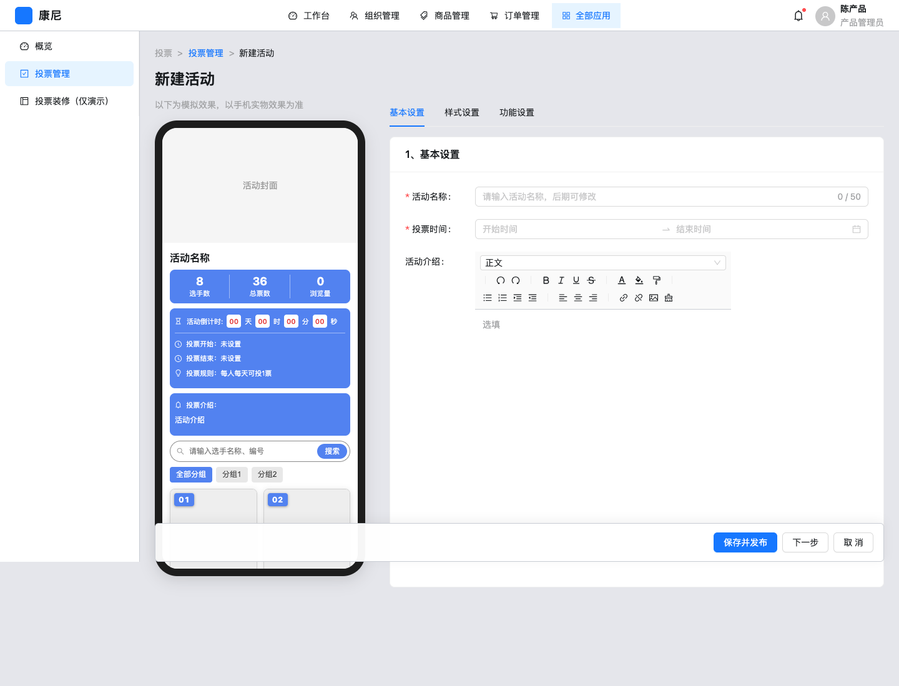
新建活动-页面-左预览右表单 ：对照「新建活动-页面-左预览右表单」实际渲染，证明该模块存在及默认样式。
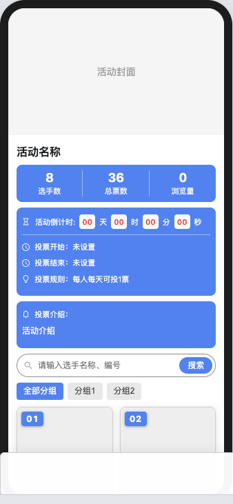
新建活动-左侧-手机预览 ：对照「新建活动-左侧-手机预览」实际渲染，证明该模块存在及默认样式。
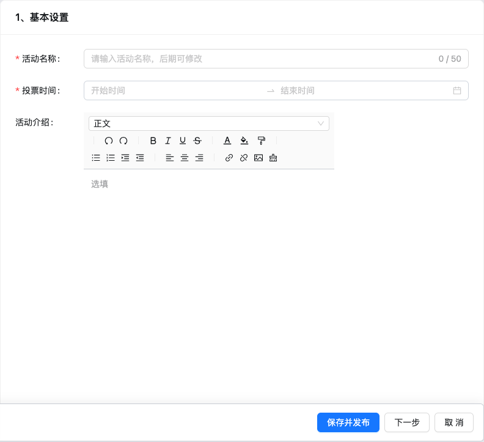
新建活动-基本设置-名称时间介绍 ：对照「新建活动-基本设置-名称时间介绍」实际渲染，证明该模块存在及默认样式。
新建活动-底部操作-保存并发布/下一步/取消 ：对照「新建活动-底部操作-保存并发布/下一步/取消」实际渲染，证明该模块存在及默认样式。
底部按钮
操作名称 组件路径 触发元素 前置条件 启用/禁用逻辑 用户动作 系统响应 状态变化 成功反馈 失败反馈 跳转/接口
保存并发布 新建活动-底部操作-保存并发布 主按钮 非只读 saving 时 loading；只读模式不渲染 点击 validateFields + 时间顺序 + 配额/选择范围 + 按部门必选部门 upsert 内存 已保存并发布 校验红字或 message.error（请选择投票时间/开始时间须早于结束时间/票数范围/请选择部门） create→edit/:id；edit→返回列表 下一步 新建活动-底部操作-下一步 次按钮 非只读 saving 时禁用 点击 Tab 向后一格，末项停在功能设置 仅切 Tab 无 不校验 无 取消 新建活动-底部操作-取消 次按钮 非只读 saving 禁用 点击 dirty 则确认离开弹窗 — — 取消停留 onBack 列表 去编辑 活动详情-页头-去编辑 主按钮 mode=view 详情页始终显示（已结束进编辑仍整页只读） 点击 — — — — vote-v2-edit 返回 活动详情-页头-返回 次按钮 mode=view 始终可用 点击 — — — — onBack 列表
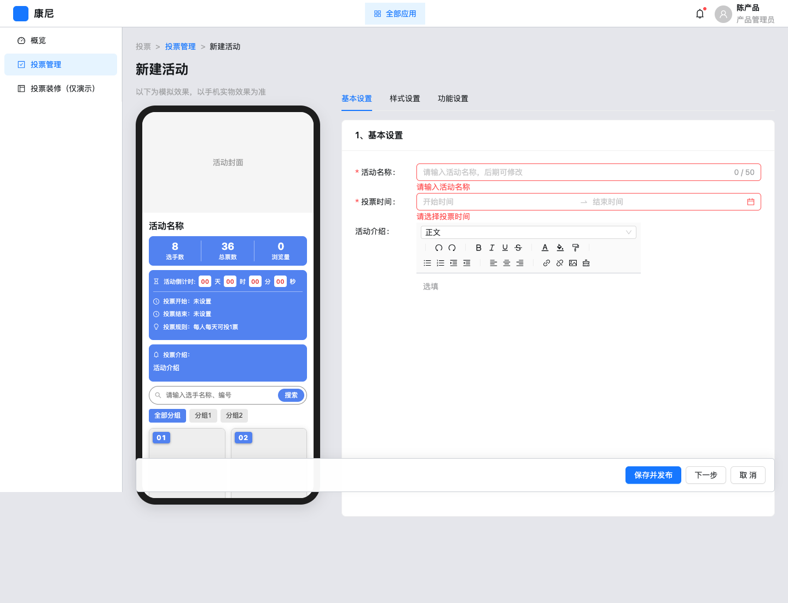
新建活动-基本设置-必填校验红字 ：对照「新建活动-基本设置-必填校验红字」实际渲染，证明该模块存在及默认样式。
空表点保存：活动名称「请输入活动名称」（max 50，showCount）；投票时间「请选择投票时间」。封面在样式 Tab 隐藏字段 required「请上传封面图」。校验失败时自动切到首个报错字段所属 Tab（firstVoteV2FormErrorTab），再滚动定位；封面缺省时切样式 Tab、滚到 #vote-v2-cover-upload 并 toast「请上传封面图」。业务校验失败同样切 Tab：时间问题→基本；配额/多选范围/按部门未选→功能。
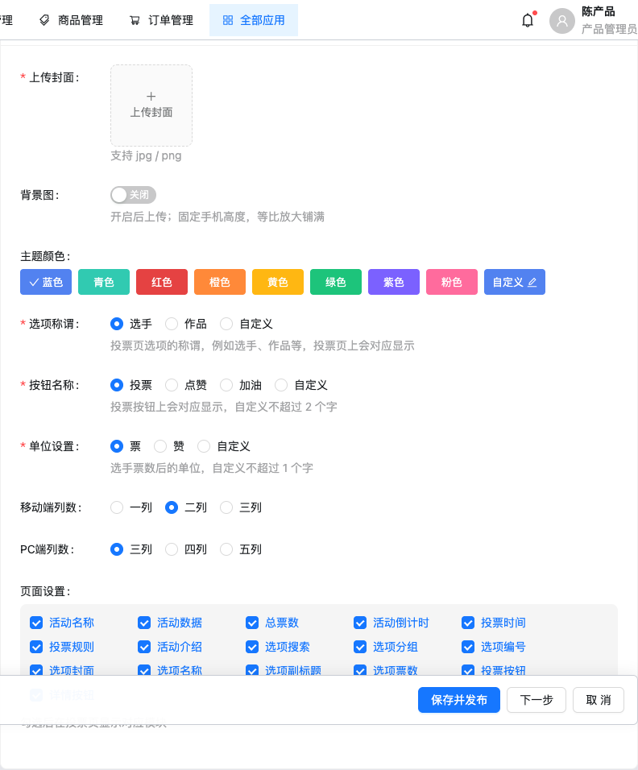
新建活动-样式设置-封面主题称谓列数页面模块 ：对照「新建活动-样式设置-封面主题称谓列数页面模块」实际渲染，证明该模块存在及默认样式。
样式字段（摘录）
字段名称 组件路径 控件类型 是否必填 默认值 校验规则 选项值 业务含义
上传封面 新建活动-样式设置-封面上传 Upload picture-card 是（coverUrl hidden required） 空 accept image/*；文案 jpg/png — C 端头图；本地 FileReader dataURL 背景图开关 新建活动-样式设置-背景图开关 Switch 否 关 开启后出现上传 开启/关闭 手机高度等比铺满 主题颜色 新建活动-样式设置-主题颜色 色板+ColorPicker 否 #5282F0 蓝 预设 8 色 蓝青红橙黄绿紫粉 按钮与强调色 选项称谓 新建活动-样式设置-选项称谓 预设或自定义 是 选手 max 4 选手、作品 文案替换「选手」 按钮名称 新建活动-样式设置-按钮名称 预设或自定义 是 投票 max 2 投票、点赞、加油 CTA 文案 单位设置 新建活动-样式设置-单位 预设或自定义 是 票 max 1 票、赞 票数单位 显示列数 新建活动-样式设置-显示列数 Radio 是 2 clamp 1|2|3 一列/二列/三列 首页网格 页面设置 新建活动-样式设置-页面设置勾选 Checkbox.Group 否 全开 — 活动名称、活动数据、总票数、活动倒计时、投票时间、投票规则、活动介绍、选手搜索、选手分组、选手编号、选手封面、选手名称、选手副标题、选手票数、投票按钮、详情按钮 关则 C 端不渲染该块
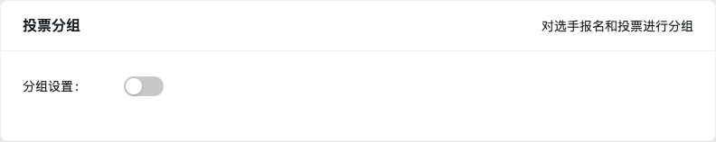
新建活动-功能设置-投票分组开关 ：对照「新建活动-功能设置-投票分组开关」实际渲染，证明该模块存在及默认样式。
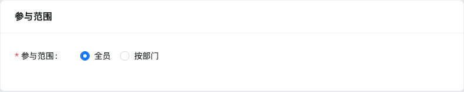
新建活动-功能设置-参与范围全员 ：对照「新建活动-功能设置-参与范围全员」实际渲染，证明该模块存在及默认样式。
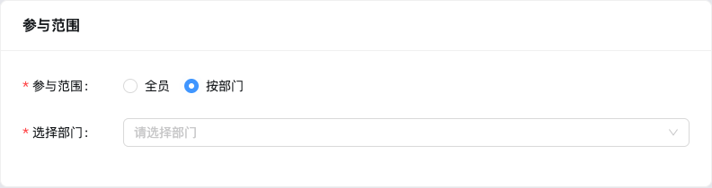
新建活动-功能设置-按部门TreeSelect ：对照「新建活动-功能设置-按部门TreeSelect」实际渲染，证明该模块存在及默认样式。
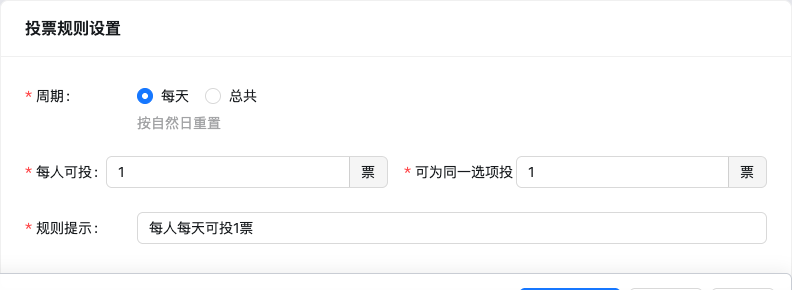
新建活动-功能设置-周期单多选配额 ：对照「新建活动-功能设置-周期单多选配额」实际渲染，证明该模块存在及默认样式。
分组开启后：显示全部分组开关；分组名 max 20；上下移/删除分组；添加分组。表单无「分组列数」控件 （模型有 groupColumns，保存时回写旧值）。空名保存时被 filter 掉。参与范围「按部门」必须至少选一个部门否则 message.error「请选择部门」。
单选显示「每人可投」「可为同一选项投」，后者不得大于前者，范围 1～50。多选显示最少/最多选择（项）。规则提示随周期/模式自动重写，除非用户改过。
未保存新建时功能区「选项管理」为 Alert「保存发布后可添加选项」。已持久化显示「去选项管理」。
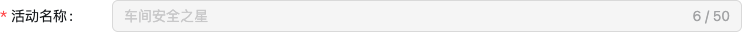
编辑活动-进行中-活动名称禁用 ：对照「编辑活动-进行中-活动名称禁用」实际渲染，证明该模块存在及默认样式。
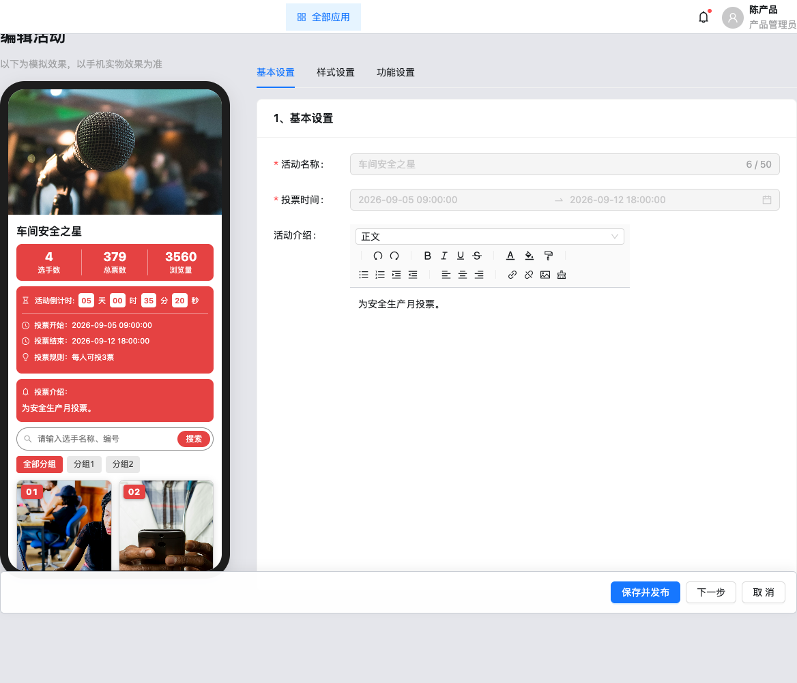
编辑活动-进行中-可改规则字段 ：对照「编辑活动-进行中-可改规则字段」实际渲染，证明该模块存在及默认样式。
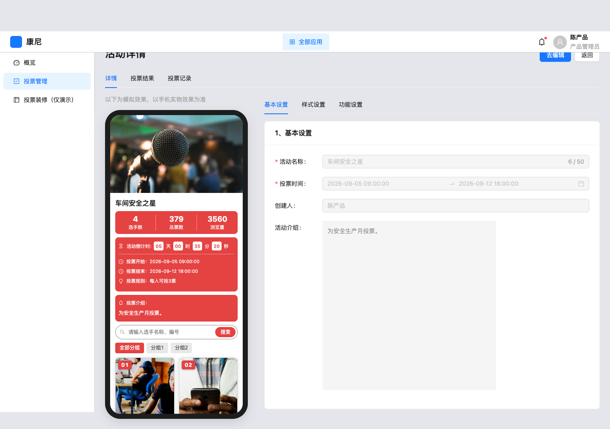
活动详情-只读表单-页头去编辑 ：对照「活动详情-只读表单-页头去编辑」实际渲染，证明该模块存在及默认样式。
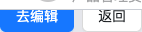
活动详情-页头-去编辑与返回 ：对照「活动详情-页头-去编辑与返回」实际渲染，证明该模块存在及默认样式。
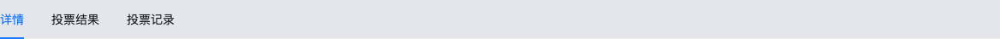
活动详情-页签-详情投票结果投票记录 ：对照「活动详情-页签-详情投票结果投票记录」实际渲染，证明该模块存在及默认样式。
编辑活动-已结束-仅返回 ：对照「编辑活动-已结束-仅返回」实际渲染，证明该模块存在及默认样式。
详情页签
仅 mode=view 渲染外层 Tabs。非当前 Tab 不挂载子树（切到结果时无 vote-v2-create 表单）。hash：/results、/records。
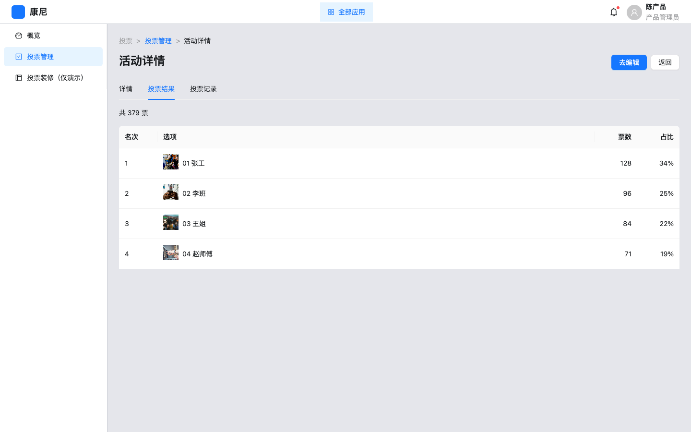
活动详情-投票结果-页签选中 ：对照「活动详情-投票结果-页签选中」实际渲染，证明该模块存在及默认样式。
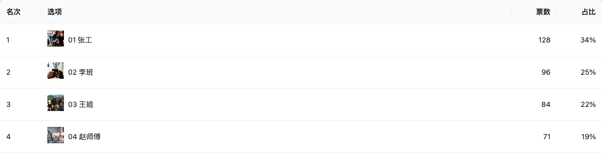
活动详情-投票结果-名次选项票数占比 ：对照「活动详情-投票结果-名次选项票数占比」实际渲染，证明该模块存在及默认样式。
结果列：名次、选项（编号+名称+缩略图）、票数、占比（总票为 0 时「—」；占比四舍五入到整数）。表上「共 N {voteUnit}」（中间有空格）。同票并列同一名次。未开始且无数据 Empty「尚未开始，暂无投票」；否则「暂无投票」。
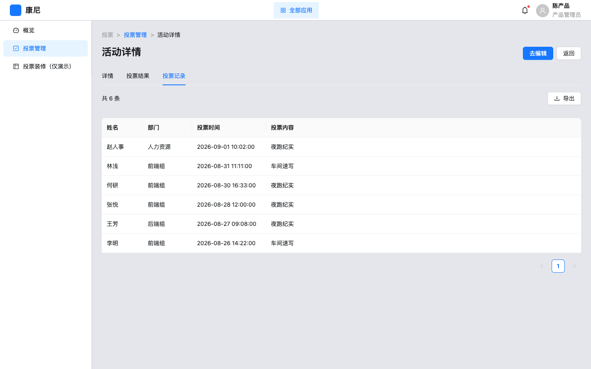
活动详情-投票记录-页签选中 ：对照「活动详情-投票记录-页签选中」实际渲染，证明该模块存在及默认样式。
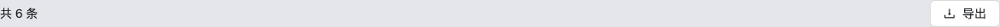
活动详情-投票记录-导出按钮 ：对照「活动详情-投票记录-导出按钮」实际渲染，证明该模块存在及默认样式。
记录按 userId+at 聚合一次提交；列：姓名（userId）、部门（组织树 personDepartment，缺省「—」）、投票时间、投票内容（多选用顿号拼接选项名）。工具栏「共 N 条」+「导出」。无数据点导出：message.warning「暂无投票可导出」。成功：已导出 N 条投票记录；文件 {活动名}-投票记录.csv BOM。单选四列；多选在时间后按选项编号展开列，选中填选项名、未选空。
状态显示条件
进行中：名称 Input disabled；时间 RangePicker 两端 disabled；参与范围 Radio/Tree disabled；样式整块与分组、规则区仍可改（样式用 styleLocked=readonly，不走 canEditVoteV2Field）。
进行中保存：若改到配额/单多选/样式/分组且该活动已有 cast，弹出 voteV2LiveSaveImpact 确认（标题「确认保存「…」的进行中修改？」；说明不重算票数、按新规则拦截继续投等）→「确认保存」才写入。
已结束：所有控件 disabled；编辑页底栏无保存，仅返回。
详情 view：页头「去编辑」+「返回」；详情 Tab 为只读表单，无底栏保存条。
7.5 选项管理
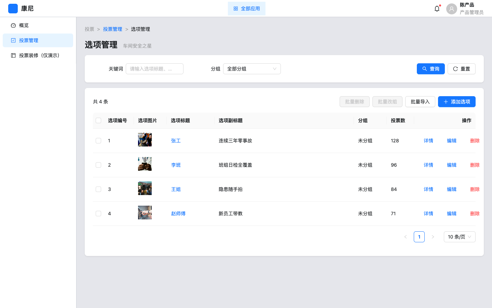
选项管理-页面-列表与工具 ：对照「选项管理-页面-列表与工具」实际渲染，证明该模块存在及默认样式。
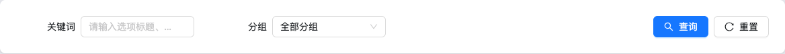
选项管理-查询筛选-关键词与分组 ：对照「选项管理-查询筛选-关键词与分组」实际渲染，证明该模块存在及默认样式。
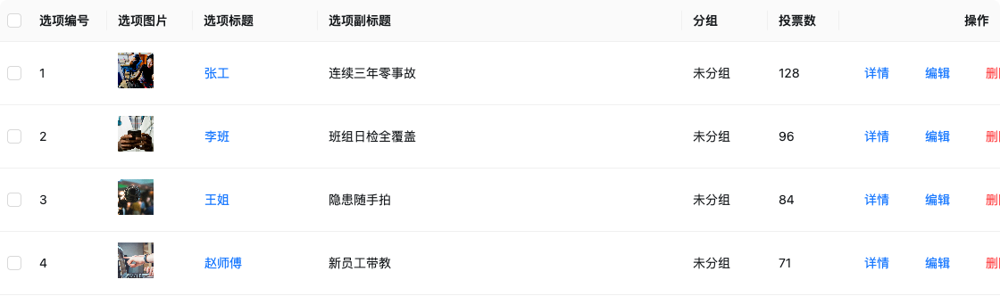
选项管理-列表表格-编号封面标题操作 ：对照「选项管理-列表表格-编号封面标题操作」实际渲染，证明该模块存在及默认样式。
选项管理-工具栏-批量删除改组导入添加 ：对照「选项管理-工具栏-批量删除改组导入添加」实际渲染，证明该模块存在及默认样式。
字段
字段名称 组件路径 控件类型 是否必填 默认值 校验规则 选项值 业务含义
关键词 选项管理-查询筛选-关键词 Input 否 空 匹配标题/副标题/编号/id — 点查询写入 hash tab 分组 选项管理-查询筛选-分组 Select 否 全部分组 — 全部/未分组/各 group.name groupKey 选项编号 选项管理-添加选项抽屉-选项编号 InputNumber min1 整数 是 nextOptionNo 必填 — 展示用编号，不保证唯一 选项标题 选项管理-添加选项抽屉-选项标题 Input 是 去空白 空 无 maxlength — 卡片主标题 选项副标题 选项管理-添加选项抽屉-副标题 Input 否 空 无 — 卡片副文案 分组 选项管理-添加选项抽屉-分组 Select allowClear 否 未分组 仅 groupingEnabled 显示 活动 groups C 端分组 Tab 封面图 选项管理-添加选项抽屉-封面图 Upload 1 张 image/* 否 空 beforeUpload false 本地预览 — 卡片图 描述 选项管理-添加选项抽屉-描述 富文本 否 空 无字数上限（活动介绍才 2000） — 详情页正文 HTML
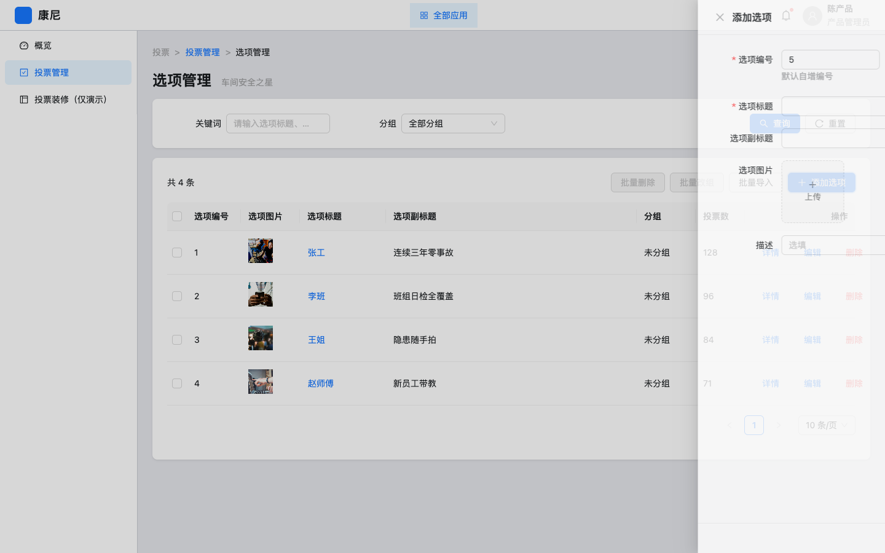
选项管理-添加选项抽屉-表单 ：对照「选项管理-添加选项抽屉-表单」实际渲染，证明该模块存在及默认样式。
选项管理-选项详情抽屉-只读+编辑 ：对照「选项管理-选项详情抽屉-只读+编辑」实际渲染，证明该模块存在及默认样式。
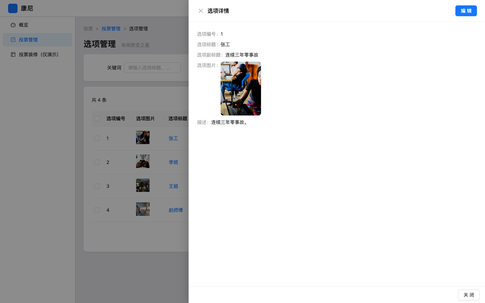
选项管理-编辑选项抽屉-可改字段与保存 ：对照「选项管理-编辑选项抽屉-可改字段与保存」实际渲染，证明该模块存在及默认样式。
详情抽屉 extra「编辑」切到编辑态；footer 关闭。编辑/添加 footer：取消、保存；保存成功 message「已保存」关抽屉。复制：立即 insert 新行 voteCount=0 locked=false，并打开编辑抽屉。
选项管理-删除确认弹窗-不可恢复 ：对照「选项管理-删除确认弹窗-不可恢复」实际渲染，证明该模块存在及默认样式。
单行/批量删除同一 confirm。批量删除、批量改组：无勾选时按钮 disabled。批量改组弹窗 Select 可清空=未分组。
选项管理-批量导入弹窗-图片Tab ：对照「选项管理-批量导入弹窗-图片Tab」实际渲染，证明该模块存在及默认样式。
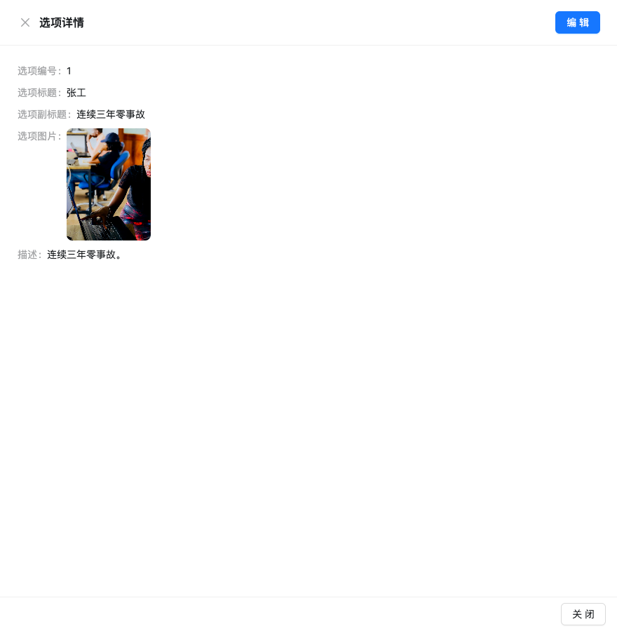
选项管理-批量导入弹窗-表格Tab与导入 ：对照「选项管理-批量导入弹窗-表格Tab与导入」实际渲染，证明该模块存在及默认样式。
图片 Tab：多选图片，文件名（去扩展名）作标题；无法识别则 error。表格表头须为：序号、选项标题、选项副标题、分组、描述（见 VOTE_V2_PLAYER_IMPORT_HEADERS）；序号与选项标题必填；分组须为已配置分组名否则报错；缺标题等写入 errors。
选项管理-空状态-无选项 ：对照「选项管理-空状态-无选项」实际渲染，证明该模块存在及默认样式。
活动不存在：Empty「活动不存在」+ 返回列表。筛选无命中：「没有符合条件的选项」。
7.6 H5 发现投票 / 我的记录
H5投票列表-进行中-整卡跳转与StatusPill ：对照「H5投票列表-进行中-整卡跳转与StatusPill」实际渲染，证明该模块存在及默认样式。
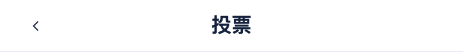
H5投票列表-顶栏-返回门户 ：对照「H5投票列表-顶栏-返回门户」实际渲染，证明该模块存在及默认样式。
H5投票列表-轮播-仅当装修含banner ：对照「H5投票列表-轮播-仅当装修含banner」实际渲染，证明该模块存在及默认样式。
H5投票列表-状态Tab-进行中未开始已结束与我的记录 ：对照「H5投票列表-状态Tab-进行中未开始已结束与我的记录」实际渲染，证明该模块存在及默认样式。
H5投票列表-活动卡片-封面标题时间状态 ：对照「H5投票列表-活动卡片-封面标题时间状态」实际渲染，证明该模块存在及默认样式。
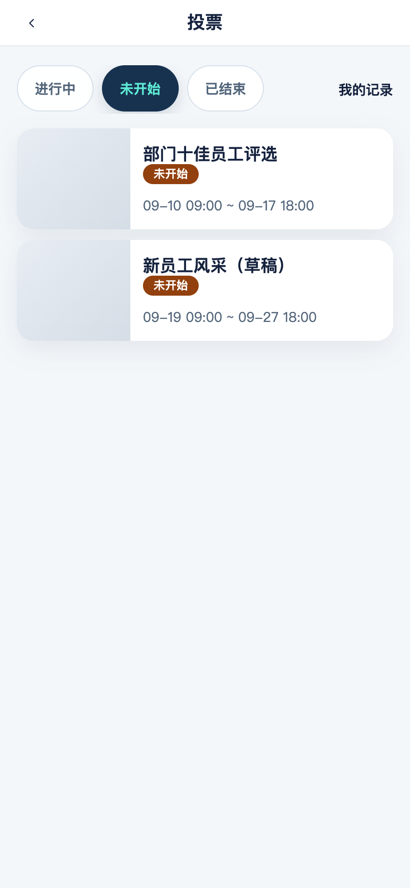
H5投票列表-未开始Tab ：对照「H5投票列表-未开始Tab」实际渲染，证明该模块存在及默认样式。
H5投票列表-已结束Tab ：对照「H5投票列表-已结束Tab」实际渲染，证明该模块存在及默认样式。
壳标题 = 装修 pageTitle（默认「投票」）。默认装修无轮播、无搜索 ，仅 vote 块。默认 Tab「进行中」。过滤：状态匹配且 canSeeVoteV2；有搜索块时按名称 includes；再 slice(0, latestCount)。空：「暂无活动」。卡片无 CTA 文案 ：整卡链接进首页；状态用 StatusPill（受 showStatus）；标题/时间受 showTitle/showTime。布局含 large-image / two-col / left-image / left-text / scroll。「我的记录」在状态 Tab 同行。H5 在 titleBar=false 时不渲染区块标题。
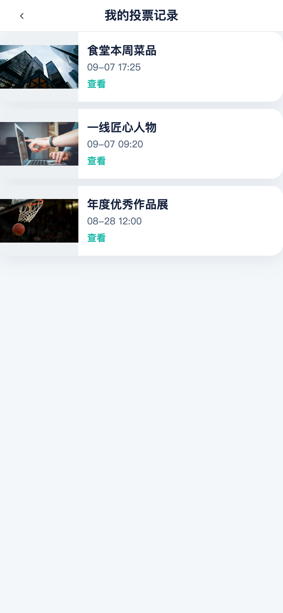
H5我的记录-列表-查看入口 ：对照「H5我的记录-列表-查看入口」实际渲染，证明该模块存在及默认样式。
壳标题「我的投票记录」（Tab 链文案仍是「我的记录」）。记录来自该用户全部 cast 聚合；卡片带封面；无记录「暂无投票记录」。CTA「查看」回活动首页。
7.7 H5 活动首页与投票
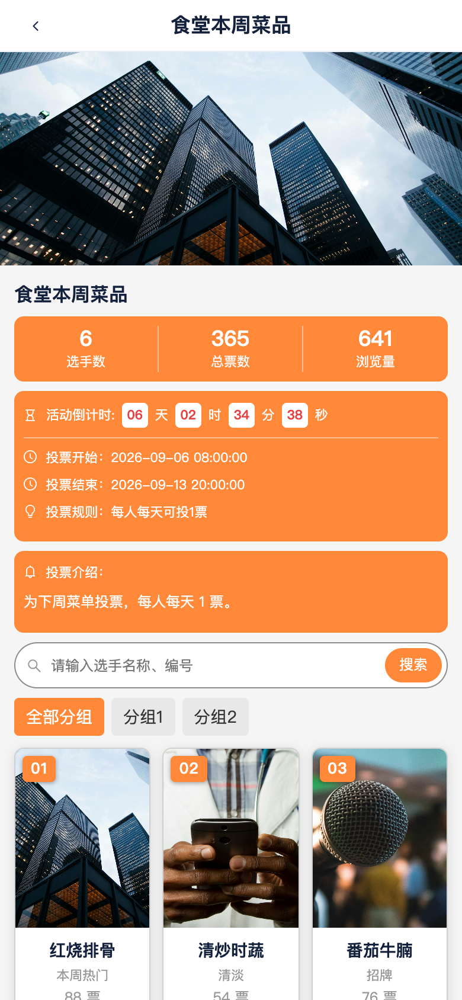
H5投票首页-单选-投票按钮 ：对照「H5投票首页-单选-投票按钮」实际渲染，证明该模块存在及默认样式。
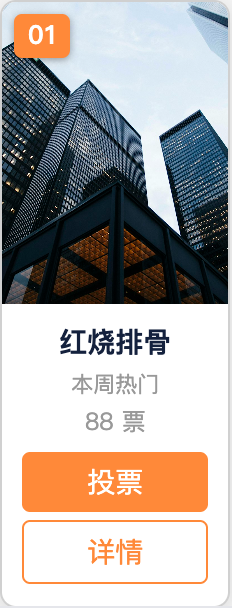
H5投票首页-选手卡片-编号票数详情 ：对照「H5投票首页-选手卡片-编号票数详情」实际渲染，证明该模块存在及默认样式。
单选：按钮文案=voteButtonNoun（默认「投票」）。点击 castVoteV2。成功经 voteV2CastUiFeedback 打开弹窗。
H5投票首页-投票成功弹窗-剩余票数 ：对照「H5投票首页-投票成功弹窗-剩余票数」实际渲染，证明该模块存在及默认样式。
弹窗标题「投票成功」，正文 今日还可投{remaining}{voteUnit}（无空格，如「今日还可投2票」），确定钮主题色=themeColor。失败 toast：活动未在投票期 / 该选项已锁定 / 不在参与范围内 / 已达投票上限 / 该选项已达可投次数。
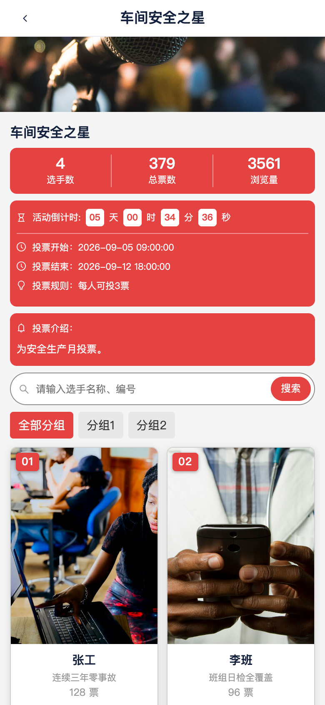
H5投票首页-多选-选择按钮 ：对照「H5投票首页-多选-选择按钮」实际渲染，证明该模块存在及默认样式。
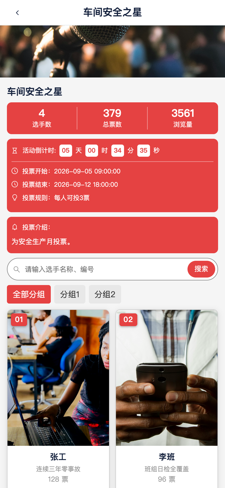
H5投票首页-多选底栏-已选与提交 ：对照「H5投票首页-多选底栏-已选与提交」实际渲染，证明该模块存在及默认样式。
选择后按钮变「取消」、卡片红边。选中态走 voteV2SelectionStore（selectionCampaignId）；后台表单预览不传该 prop，用本地 state。底栏确认钮=voteButtonNoun，未达 min disabled。提交 castVoteV2Many：仅 unique.length===1 成功 并弹窗、清选中；否则 toast「请选择1项」。首页触顶 max：不增选且无 toast。打开可见首页 incrementVoteV2ViewCount +1；页面设置开「活动数据」时首页统计展示浏览量。
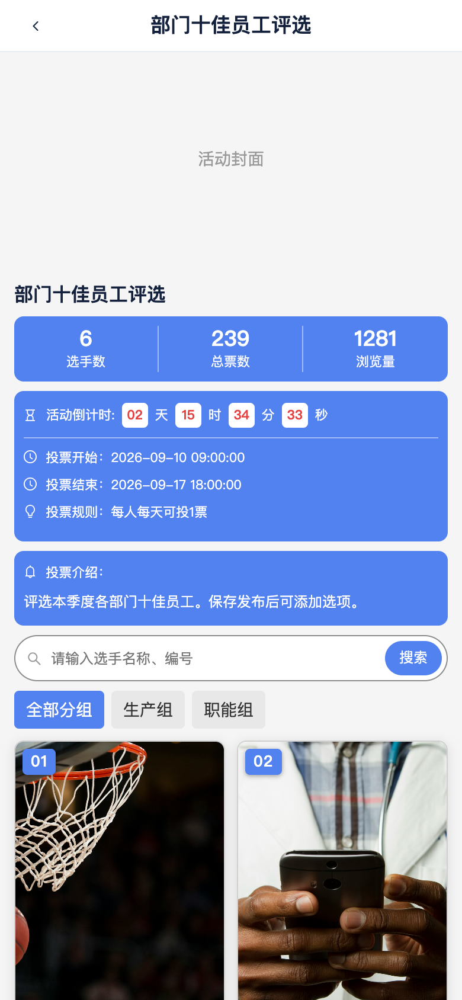
H5投票首页-未开始-倒计时向开始时间 ：对照「H5投票首页-未开始-倒计时向开始时间」实际渲染，证明该模块存在及默认样式。
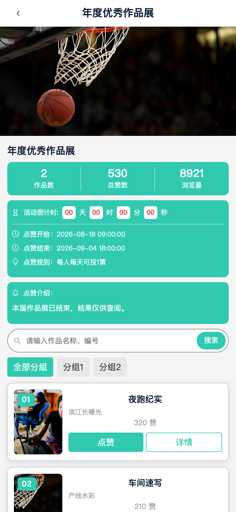
H5投票首页-已结束-作品称谓点赞 ：对照「H5投票首页-已结束-作品称谓点赞」实际渲染，证明该模块存在及默认样式。
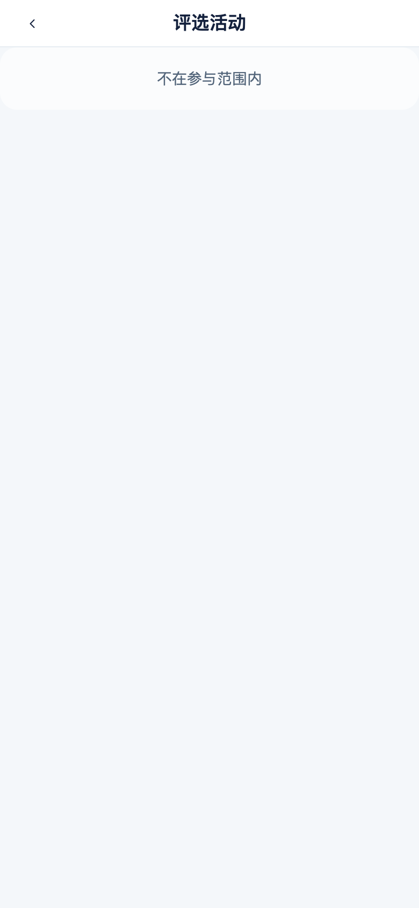
H5投票首页-按部门不可见空态 ：对照「H5投票首页-按部门不可见空态」实际渲染，证明该模块存在及默认样式。
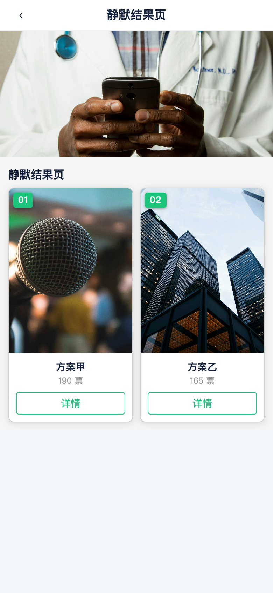
H5投票首页-页面设置关闭后的静默布局 ：对照「H5投票首页-页面设置关闭后的静默布局」实际渲染，证明该模块存在及默认样式。
不在范围或活动缺失：壳标题「评选活动」，文案「不在参与范围内」或「活动不存在」。倒计时：未开始对准 startAt，进行中对准 endAt。
7.8 H5 / PC 选项详情
H5选项详情-头图排名描述 ：对照「H5选项详情-头图排名描述」实际渲染，证明该模块存在及默认样式。
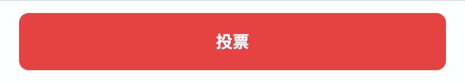
H5选项详情-底部固定投票CTA ：对照「H5选项详情-底部固定投票CTA」实际渲染，证明该模块存在及默认样式。
布局：顶栏活动封面（coverUrl）→ 编号/名称/副标题 → 统计「排名 / 票数 / 距上一名」（值如「第1名」「当前128票」「差32票」）→ 选手大图 → 描述 HTML。H5 底栏 CTA；PC 侧栏 CTA。locked 时按钮 disabled。
单选：CTA=voteButtonNoun，点按 castVoteV2，成功弹窗。多选：CTA「选择/取消」，共享 selection store；确认条规则同首页（提交仍仅允许 1 项）。详情触顶 max：不增选且 toast 多选提示。H5：底栏=确认条+CTA，无分享按钮 ；PC：侧栏 CTA + 确认条，顶栏可分享（禁止分享时隐藏）。
PC选项详情-页面-主栏加侧栏 ：对照「PC选项详情-页面-主栏加侧栏」实际渲染，证明该模块存在及默认样式。
PC选项详情-侧栏-名称与投票按钮 ：对照「PC选项详情-侧栏-名称与投票按钮」实际渲染，证明该模块存在及默认样式。
7.9 PC 发现与首页
PC投票列表-宽屏壳-装修标题 ：对照「PC投票列表-宽屏壳-装修标题」实际渲染，证明该模块存在及默认样式。
PC投票列表-轮播-装修banner ：对照「PC投票列表-轮播-装修banner」实际渲染，证明该模块存在及默认样式。
PC投票列表-状态Tab与我的记录 ：对照「PC投票列表-状态Tab与我的记录」实际渲染，证明该模块存在及默认样式。
PC投票列表-卡片网格 ：对照「PC投票列表-卡片网格」实际渲染，证明该模块存在及默认样式。
PC投票首页-舞台预览 ：对照「PC投票首页-舞台预览」实际渲染，证明该模块存在及默认样式。
PC我的记录-列表 ：对照「PC我的记录-列表」实际渲染，证明该模块存在及默认样式。
PC 复用 H5VoteV2List surface=pc：宽屏壳标题=装修 pageTitle；vote 块 titleBar 默认开时用块 title，关时硬编码「发现投票」；「我的记录」在状态 Tab 行右侧。默认无轮播。卡片无 CTA、StatusPill + 整卡跳转。列数跟装修 columnCount。首页/详情分享仅 PC；投票规则与 H5 相同。